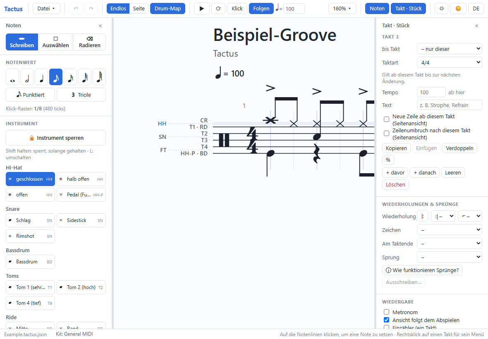
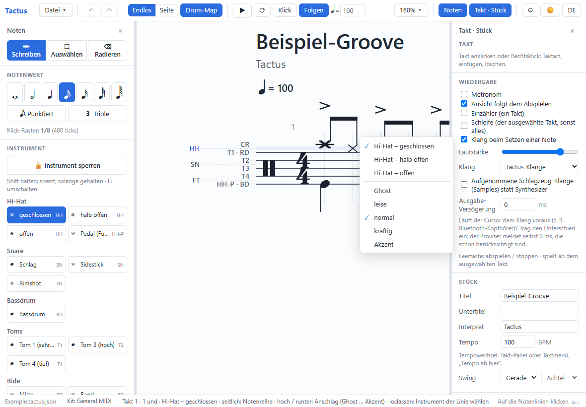
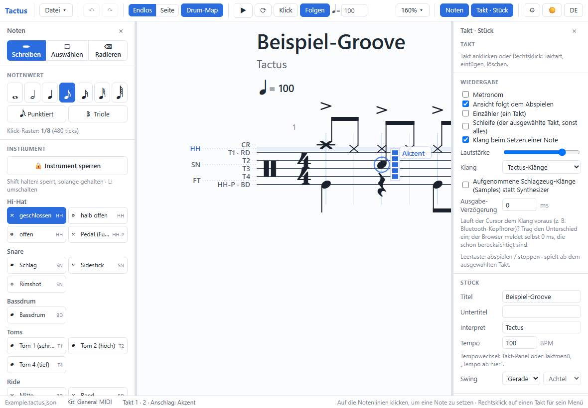
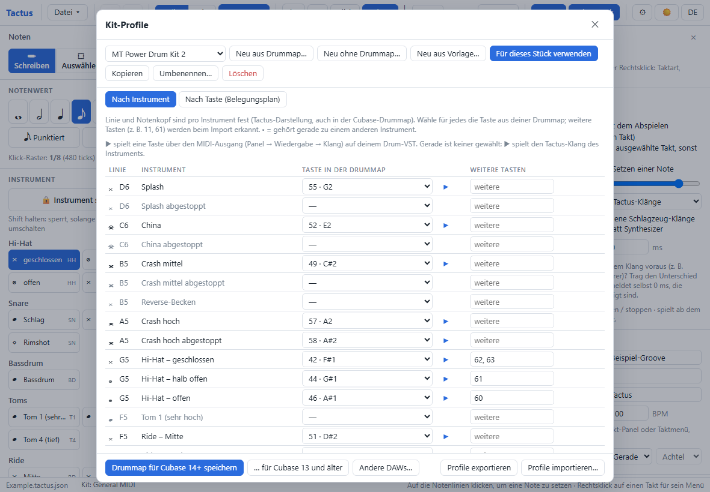
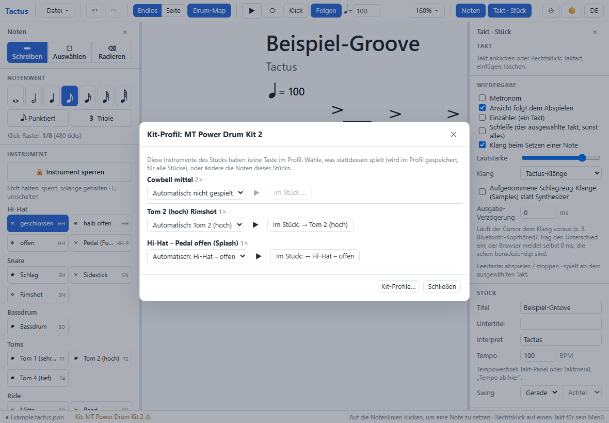
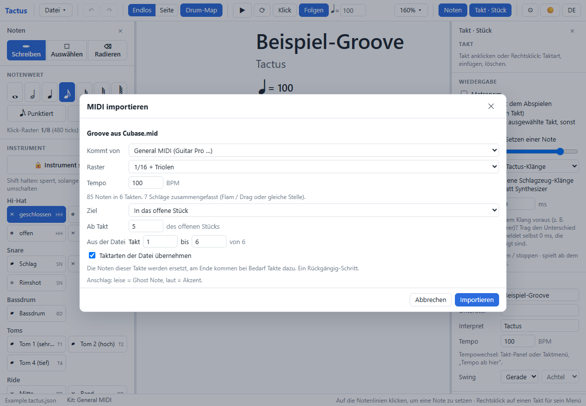
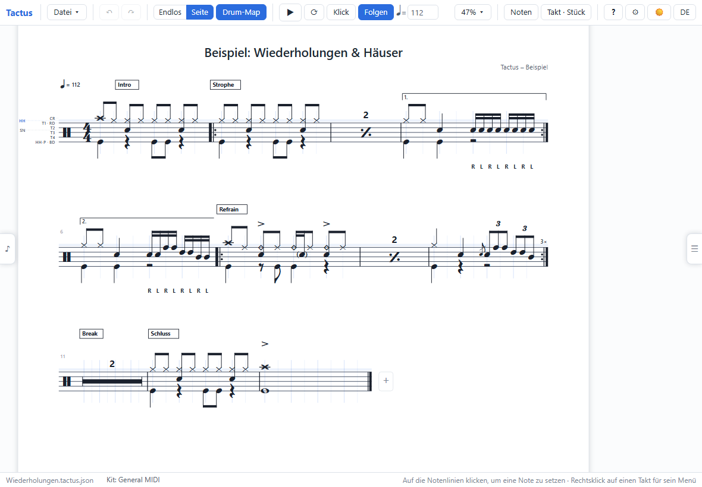
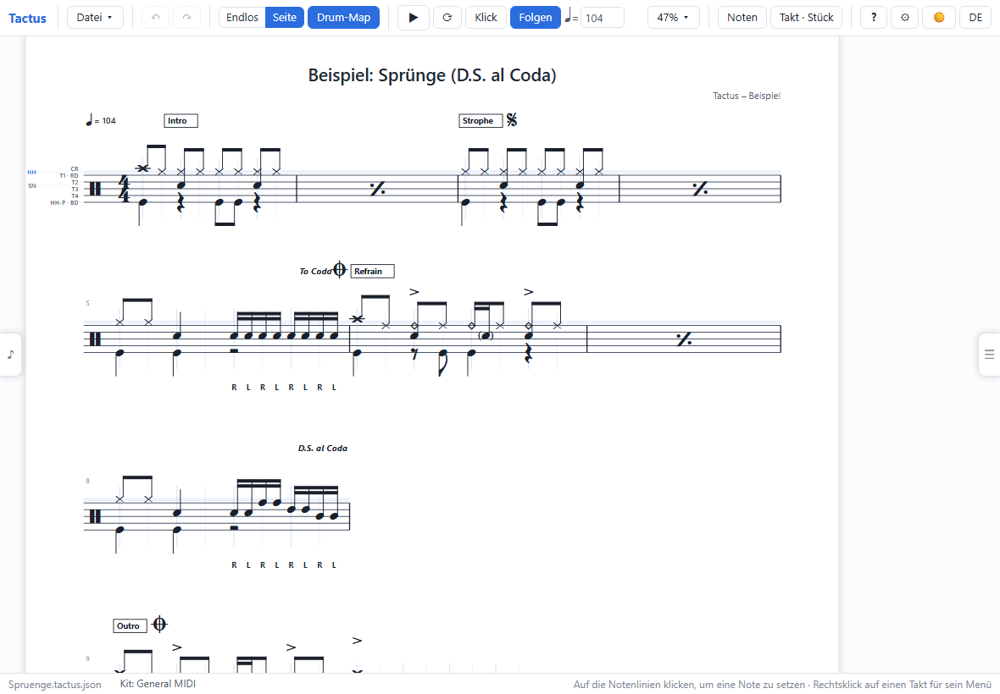
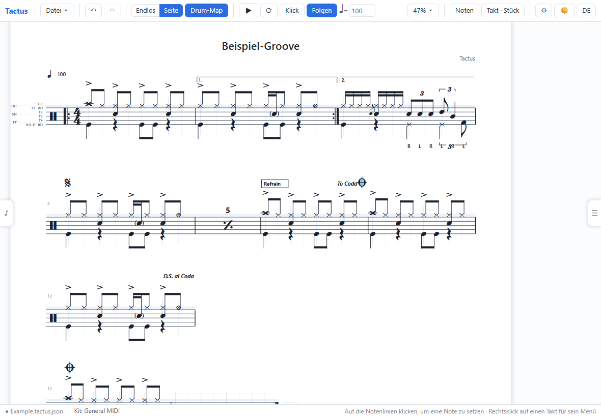

Tactus – Handbuch
Schlagzeugnoten im Bandraum mitschreiben, sofort anhören – und zuhause mit dem echten Drum-VST in Cubase weiterarbeiten.
1. Die Idee hinter Tactus
Tactus ist für einen ganz bestimmten Ablauf gebaut:
Der zweite große Vorteil: Tactus versteht Instrumente, nicht Tasten. Deshalb kann es zwischen den Tastenbelegungen verschiedener Drum-VSTs übersetzen – ein Groove, den du für UJAM geschrieben hast, klingt mit einem Klick in EZDrummer richtig (Kapitel 5).
Anders als Guitar Pro – eher wie eine DAW
Wer Guitar Pro kennt, sollte kurz umdenken. Tactus arbeitet wie der Drum-Editor einer DAW, nur dass du dabei echte Noten siehst:
| Guitar Pro | Tactus | |
|---|---|---|
| Noten eingeben | Note für Note mit dem Cursor, Notenwerte selbst passend machen | Einfach ins Raster tippen, wo der Schlag sitzt – Notenwerte, Pausen und Balken ergeben sich von selbst |
| Instrumente | Notenlinie + Kopf | Jede Linie ist ein Instrument, wie eine Zeile im Drum-Editor; auf einer Linie wählst du die Spielweise (Hi-Hat zu / halb / offen …) |
| Lautstärke | Akzent / Ghost | Fünf Anschlagstufen pro Schlag (Ghost · leise · normal · kräftig · Akzent) – wie Velocity |
| Anhören | eingebaute Klänge | Schleife über ausgewählte Takte, bearbeiten während es läuft – jede Änderung ist sofort zu hören; auf Wunsch über dein echtes Drum-VST |
| Zur DAW | MIDI-Export | MIDI mit der Tastenbelegung deines VSTs, dazu die passende Drummap für Cubase, Reaper oder Studio One |
2. Schnellstart im Bandraum
Tactus aufs Tablet holen – einmal, mit Internet
- Die Adresse von Tactus im Browser öffnen (Chrome, Edge oder Safari).
- Als App installieren: Android / Chrome / Edge: Menü → App installieren bzw. Zum Startbildschirm hinzufügen. iPad: Teilen-Knopf → Zum Home-Bildschirm.
- Einmal öffnen, solange Internet da ist. Danach funktioniert Tactus komplett ohne WLAN – im Bandraum ist kein Netz nötig.
- Falls du die aufgenommenen Klänge willst (Kapitel 9): sie einmal online einschalten, dann sind sie auch offline da.
Den ersten Groove schreiben

- Datei → Neues Stück. Takt und Tempo stellst du rechts im Panel ein.
- Links den Notenwert wählen, z. B. Achtel. Er bestimmt das Raster, in das deine Schläge einrasten.
- Auf die Hi-Hat-Linie tippen: es erscheint eine Vorschau-Note, beim Loslassen ist sie gesetzt. Für eine ganze Achtelreihe: auf die erste Note tippen, halten, dann seitwärts ziehen (Kapitel 3).
- Snare und Bassdrum genauso. Welche Linie welches Instrument ist, zeigt die Drum-Map (Werkzeugleiste) links an den Linien.
- Anhören: ▶ oder Leertaste. Den Takt antippen und ⟳ (Schleife) einschalten: der Takt läuft immer wieder.
- Live verbessern: während die Schleife läuft, Noten setzen, verschieben, lauter oder leiser machen – du hörst es beim nächsten Durchlauf sofort.
- Takt fertig? Rechts Verdoppeln oder % (wiederholt den Takt davor), Tempo oben in der Werkzeugleiste.
Speichern
Tactus merkt sich das offene Stück automatisch im Gerät. Zum Aufheben: Datei → Speichern (eine Datei .tactus.json)
oder – praktischer für den Weg nach Hause – In Dropbox speichern (Kapitel 10).
Zum Ausprobieren gibt es fertige Beispiele unter Datei → Beispiele: ▶ Groove ▶ Wiederholungen & Häuser ▶ Sprünge
3. Mit Finger und Stift
Tactus ist zuerst für das Tablet gebaut. Alles geht mit dem Finger – mit dem Stift noch genauer.
Die Gesten
| Geste | Wo | Was passiert |
|---|---|---|
| Tippen | auf den Linien | Note setzen. Beim Drücken erscheint eine Vorschau; solange du hältst, kannst du hoch / runter zielen – Loslassen setzt. |
| Tippen | auf eine Note | Note auswählen (zum Ändern im Noten-Panel) bzw. – im Werkzeug Radieren – löschen. |
| Ziehen | eine Note | Verschieben: seitwärts in der Zeit, hoch / runter auf ein anderes Instrument. |
| Halten, dann seitwärts ziehen | eine Note | Notenreihe: z. B. eine ganze Hi-Hat-Achtelreihe in einem Zug. |
| Halten, dann hoch / runter | eine Note | Anschlag: Ghost · leise · normal · kräftig · Akzent. Neben der Note erscheint eine kleine Skala. |
| Halten und loslassen | eine Note | Menü: die anderen Spielweisen der Linie (Hi-Hat zu / halb / offen, Snare / Rimshot / Sidestick …) und der Anschlag. |
| Halten | leere Stelle / neben den Linien | Taktmenü: Takt einfügen, löschen, kopieren, Taktart, Wiederholung, Text, neue Zeile … |
| Tippen | neben den Linien (darüber / darunter) | Takt auswählen (für Panel, Schleife, Kopieren). |
| Ziehen | neben den Linien | Ansicht verschieben. |
| Zwei Finger | überall | Verschieben und zoomen. |
| Stift-Radierer | auf Noten | Das Radierer-Ende eines Stifts löscht immer – antippen oder darüberwischen. |


Werkzeuge
Oben im Noten-Panel: ✏ Schreiben (Standard), ⬚ Auswählen (Rahmen aufziehen, mehrere Noten gemeinsam verschieben oder ändern) und ⌫ Radieren (antippen oder über Noten wischen – ein Rückgängig-Schritt).
Tipps für schnelles Mitschreiben
- Instrument sperren (Knopf im Noten-Panel): solange gesperrt, schreibt jeder Tipp das gewählte Instrument, egal wie genau du die Linie triffst – ideal für schnelle Hi-Hat- oder Bassdrum-Figuren.
- Zuerst das Gerüst (Hi-Hat, Snare, Bassdrum), dann mit % oder Verdoppeln weiter – die Feinheiten (Ghost Notes, offene Hi-Hat) kommen danach mit Halten + Menü.
- Takt in die Schleife nehmen und so lange ändern, bis es klingt wie das, was der Drummer spielt.
- Nur mit dem Stift schreiben, mit dem Finger blättern: ⚙ → Ansicht → „Finger setzt Noten“ ausschalten.
- Linkshänder: ⚙ → Ansicht → Linkshändermodus tauscht die beiden Panels.
4. Zuhause: vom Tablet nach Cubase
- Am PC Tactus öffnen und das Stück holen: Datei → Aus Dropbox öffnen… (oder den geteilten Link öffnen).
- Einmalig: ein Kit-Profil für dein Drum-VST anlegen (unten).
- Unten in der Statusleiste auf Kit: … tippen und das Profil für dieses Stück wählen.
- Anhören über das echte VST (unten) – oder direkt MIDI exportieren und in Cubase auf die Schlagzeugspur ziehen.
Kit-Profile – das Prinzip
Jedes Drum-VST legt seine Klänge auf andere Tasten: bei dem einen ist die offene Hi-Hat Taste 46, beim anderen 26. Ein Kit-Profil sagt Tactus, welche Taste deines VSTs welches Instrument ist. Das Notenbild bleibt immer gleich – die Snare steht immer auf derselben Linie, nur die Taste dahinter wechselt je nach Profil.
Öffnen: Datei → Kit-Profile… oder ⚙ → Kit-Profile. Drei Wege zu einem Profil:
| Weg | Wann |
|---|---|
| Neu aus Drummap… | Du hast eine Drummap des Herstellers: Cubase .drm, Reaper-Notennamen .txt oder Studio-One-.pitchlist. Tactus erkennt an den Namen, welche Taste welches Instrument ist – du korrigierst nur, was nicht passt. |
| Neu aus Vorlage… | Für das kostenlose MT Power Drum Kit 2 und alles nach General MIDI (z. B. Groove Agent SE, das bei Cubase dabei ist). |
| Neu ohne Drummap… | Der Hersteller liefert keine Drummap: alle 128 Tasten, General MIDI vorbelegt. In der Ansicht Nach Taste spielst du jede Taste mit ▶ an und wählst das Instrument – wie den Belegungsplan aus dem Handbuch des VSTs abtippen. |

- Weitere Tasten: manche VSTs haben einen Klang auf mehreren Tasten (z. B. Snare auf 38 und 40). Die erste Taste wird beim Export benutzt, alle zählen beim Import.
- Mit Für dieses Stück verwenden gilt das Profil für das offene Stück – es wird mit dem Stück gespeichert.
- Kit-Profile liegen im Browser und – wenn verbunden – automatisch in der Dropbox, also auf allen deinen Geräten.
Was fehlt im Profil?
Hat das VST ein Instrument nicht, das im Stück vorkommt (z. B. keine China), meldet Tactus das beim Wechsel des Profils, und in der Statusleiste steht ein ⚠. Pro fehlendem Instrument wählst du:

- Automatisch: ein verwandtes Instrument (China → Crash, Tom 5 → nächstes Tom, abgestopptes Becken → Becken).
- Spielen als: ein anderes Instrument des Profils – oder eine freie Taste des VSTs (z. B. ein „FX“-Klang).
- Nicht spielen.
- Im Stück: → … schreibt die Noten selbst um (z. B. alle China-Noten zu Crash) – ein Rückgängig-Schritt.
Die Wahl wird im Profil gespeichert und gilt für Abspielen und MIDI-Export.
Über das echte Drum-VST anhören
Tactus kann die Noten live an Cubase (oder ein Standalone-VST) schicken – dann hörst du dein Stück mit EZDrummer, Groove Agent, UJAM … Das geht in Chrome und Edge am PC.
- Einmalig ein virtuelles MIDI-Kabel einrichten: unter Windows das kostenlose loopMIDI installieren und dort einen Port anlegen (Mac: der eingebaute IAC-Treiber).
- In Cubase: die Schlagzeugspur auf diesen MIDI-Eingang stellen und Monitor einschalten (oder die Aufnahme aktivieren). Ein Standalone-VST stellst du in seinen MIDI-Einstellungen auf den Port.
- In Tactus: Panel Wiedergabe → Klang → MIDI-Ausgang (Cubase …)…; beim ersten Mal fragt der Browser um Erlaubnis. Dann den Port wählen.
- Abspielen. Die Tasten kommen aus dem Kit-Profil des Stücks.
- Vorlauf einstellen (Feld unter dem Ausgang): mit Metronom abspielen und erhöhen, bis VST und Klick zusammen sind. Mit ASIO-Treiber sind das wenige Millisekunden, ein Standalone-VST ohne ASIO braucht oft 100–250 ms.
Der Knopf Tactus / MIDI in der Werkzeugleiste schaltet danach mit einem Tipp zwischen Tactus-Klängen und deinem VST um.
MIDI nach Cubase
Datei → MIDI exportieren für → das Kit-Profil (oder Strg+E mit dem Profil des Stücks). Die Datei enthält:
- die Tasten deines VSTs, Anschlag (Velocity), Flams / Drags / Wirbel ausgespielt,
- Tempo und Tempowechsel, Taktarten, Takt-Texte als Marker,
- Wiederholungen, %-Takte und Sprünge ausgeschrieben – so wie gespielt (Cubase kennt keine Wiederholungen), mit Markern wie „Takt 5 – 2. Mal“ oder „D.S. – Takt 3“,
- Swing wie gehört – oder gerade (Panel Stück → Swing), wenn du in Cubase swingen willst.
In Cubase: die Datei auf die Schlagzeugspur ziehen. Für Guitar Pro nimm General MIDI (Guitar Pro liest dabei Triolen leider nicht als Triolen).
Drummap für Cubase, Reaper und Studio One
Damit Cubase dein Schlagzeug genauso notiert wie Tactus: im Kit-Profil Drummap für Cubase 14+ speichern (mit Notenköpfen, Instrumenten und Spielweisen) bzw. … für Cubase 13 und älter (älteres Format, nur Notenköpfe – ältere Versionen kennen keine Spielweisen). In Cubase: MIDI → Drum-Map-Einstellungen → Laden, dann der Spur im Inspector zuweisen.
Andere DAWs… speichert die Tastennamen für den MIDI-Editor von Reaper (.txt, „Load note names from file“) und
Studio One (.pitchlist). Diese Formate kennen nur Namen, keine Notenköpfe.
Der Rückweg: MIDI aus Cubase holen
Datei → MIDI importieren… oder die .mid-Datei einfach auf das Tactus-Fenster ziehen.

- Spur: bei einem ganzen Projekt die Schlagzeugspur (Tactus schlägt sie vor).
- Kommt von: das Profil des VSTs, das die Datei gespielt hat – sonst landen die Tasten auf falschen Instrumenten.
- Raster: wie fein Tactus die Schläge einrastet; „1/16 + Triolen“ entscheidet pro Schlag, ob gerade oder triolisch passt.
- Ziel: neues Stück, oder in das offene Stück ab einem Takt – z. B. nur den in Cubase eingespielten Refrain holen.
- Anschlag wird zu den fünf Stufen, leise Schläge kurz vor einem Schlag zu Flam / Drag.
5. Drum-VST wechseln mit Tactus
Das Problem kennt jeder: In Cubase ist ein Groove für UJAM geschrieben, jetzt soll er mit EZDrummer laufen – und klingt falsch, weil jedes VST seine Klänge auf anderen Tasten hat. Cubase-Drummaps lassen sich kaum ineinander umrechnen. Tactus kann das, weil es Instrumente kennt statt Tasten:
- In Cubase die Schlagzeugspur als MIDI-Datei exportieren.
- In Tactus MIDI importieren, bei Kommt von das Profil des alten VSTs wählen.
- Unten auf Kit: … tippen und das Profil des neuen VSTs wählen. Fehlt dort etwas, zeigt Tactus es an – Ersatz wählen (oben).
- Optional zur Kontrolle über das neue VST anhören (MIDI-Ausgang).
- MIDI exportieren mit dem neuen Profil und in Cubase auf die Spur mit dem neuen VST ziehen. Dazu im Kit-Profil die Drummap des neuen VSTs für Cubase speichern und der Spur zuweisen.
Weitere Unterschiede zwischen VSTs, auf die du achten solltest: weniger Toms oder Becken (mehrere Noten landen auf demselben Klang), und jedes VST reagiert anders auf Anschlag – Ghost Notes können lauter oder leiser wirken.
6. Noten schreiben im Detail
Notenwerte, Triolen, Punktierung
Der gewählte Notenwert ist das Klick-Raster: in diesem Abstand rasten neue Noten ein. Wie lang eine Note gezeichnet wird, ergibt sich von selbst: sie reicht bis zur nächsten Note, höchstens bis zum Ende ihres Schlags – Pausen und Balken setzt Tactus. Für Triolen 3 Triole einschalten, für punktierte Werte Punktiert. Gerade und triolisch dürfen im selben Takt stehen.
Flam, Drag, Wirbel, Sticking
Note auswählen (antippen), dann im Noten-Panel: Flam / Drag (Vorschläge), Wirbel mit 1–3 Strichen, Sticking R / L unter der Note. Alles wird beim Abspielen und im MIDI-Export ausgespielt.
Mehrere Noten auf einmal
Werkzeug Auswählen: Rahmen ziehen, dann gemeinsam verschieben, Instrument oder Anschlag ändern. Strg+A wählt alle Noten (bzw. die der ausgewählten Takte).
Drum-Kit, Darstellung, Notenhälse
- ⚙ → Drum-Kit: welche Instrumente im Noten-Panel angeboten werden – Standard, Groß, Alle, Eigene Auswahl oder Wie das Kit-Profil (genau die Instrumente deines VSTs).
- Darstellung: „Tactus“ (Standard; wie die Tactus-Drummap in Cubase) oder „Guitar Pro“. Nur das Bild ändert sich.
- Notenhälse: alle nach oben, Füße nach unten, oder Füße und tiefe Toms nach unten.
- ⚙ → Ansicht: Zählhilfe unter den Noten (1 e + e), Pausenbereinigung.
7. Takte und Form
Ein Takt wird ausgewählt, indem du neben die Linien (darüber oder darunter) tippst. Rechts im Panel stehen dann seine Einstellungen, Halten bzw. Rechtsklick öffnet das Taktmenü.
- Taktart und Balkengruppen (7/8 = 2+2+3 …) gelten ab diesem Takt bis zur nächsten Änderung.
- Tempo ab hier: Tempowechsel; alle Wechsel stehen im Panel Stück als Liste.
- Text über dem Takt (Intro, Strophe, Refrain …) – erscheint als Marker in Cubase.
- Kopieren / Einfügen / Verdoppeln / Leeren / Löschen – auch für mehrere Takte: Shift+Tippen neben die Linien oder bis Takt im Panel.
- %: der Takt wiederholt den davor (beim Abspielen und Export ausgeschrieben).
- Swing / Shuffle: Panel Stück → Swing, für Achtel oder Sechzehntel.
Wiederholungen und Häuser
Panel Wiederholungen & Sprünge oder Taktmenü Wiederholung & Sprung: |: Anfang, :| Ende (2×, 3× …), Klammern 1. / 2. (Häuser, auch über mehrere Takte). Sind mehrere Takte ausgewählt: Takte a–b wiederholen.
Beim Abspielen zeigt die Statusleiste auch den gespielten Takt (so zählt Cubase). Ausschreiben… macht aus allen Wiederholungen eigene Takte, dann stimmen die Taktnummern 1:1 mit Cubase.

▶ Beispiel im Programm öffnen: Wiederholungen & Häuser – Wiederholung mit 1./2. Haus, %-Takte, ein Refrain, der dreimal gespielt wird, und eine Mehrtaktpause. Abspielen und in der Statusleiste mitlesen, welcher Takt gerade gespielt wird. Auch zu finden unter Datei → Beispiele.
Sprünge: D.C., D.S., Coda, Fine
| Zeichen | Bedeutung |
|---|---|
| D.C. (Da Capo) | zurück zum Anfang |
| D.S. (Dal Segno) | zurück zum Zeichen 𝄋 Segno |
| … al Fine | nach dem Sprung bis zum Takt mit Fine spielen – dort ist Schluss |
| … al Coda | nach dem Sprung bis To Coda, dann weiter beim Takt mit ⊕ Coda (dem Schlussteil) |
Fine und To Coda gelten erst nach dem Sprung – beim ersten Durchlauf spielt man darüber hinweg.
Wiederholungen nach dem Sprung werden nur einmal gespielt, bei Häusern das letzte – so ist es üblich. Steht „con rip.“ in den Noten: Häkchen Wiederholungen nach dem Sprung mitspielen.
Setzen: Takt auswählen → Panel Wiederholungen & Sprünge: Zeichen (am Taktanfang), Am Taktende (Fine, To Coda), Sprung. Fehlt etwas (D.S. ohne Segno …), steht ein Hinweis im Panel. Abspielen, Cursor und MIDI-Export folgen den Sprüngen.

▶ Beispiel im Programm öffnen: Sprünge (D.S. al Coda) – Intro, Strophe ab dem Segno, Refrain, zurück zum Segno, bei „To Coda“ in die Coda. Abspielen und dem Cursor folgen.
8. Notenblatt und PDF
Seite in der Werkzeugleiste zeigt A4-Seiten wie gedruckt; schreiben geht dort genauso. Drucken oder PDF: Datei → PDF / Drucken (Strg+P), als Drucker „Als PDF speichern“.

Einstellungen unter ⚙ → Seite:
- Takte pro Zeile (automatisch oder fest), neue Zeile ab einem Takt über das Taktmenü.
- Taktnummern, Seitenränder, Titel und Seitenzahl auf den Folgeseiten.
- Leere Takte zusammenfassen: mehrere Pausentakte werden ein Balken mit Anzahl (Mehrtaktpause).
- %-Takte: jeder einzeln, schmal und durchgezählt (2, 3, 4 … – üblich in Schlagzeug-Charts) oder zusammengefasst zu einem % mit Anzahl – das kompakteste für ein volles Notenblatt.
9. Wiedergabe und Klang
- ▶ / Leertaste spielt ab dem ausgewählten Takt; sind mehrere Takte ausgewählt, genau diese.
- ⟳ Schleife: die ausgewählten Takte immer wieder. Läuft das Stück ohne Schleife bis zum Ende, beginnt der nächste Start bei Takt 1.
- Während des Abspielens bearbeiten: jede Änderung ist sofort zu hören – so findest du den Groove am schnellsten.
- Klick = Metronom, Einzähler im Panel. Folgen aus: die Ansicht bleibt stehen, damit du beim Hören an einer anderen Stelle ändern kannst.
- Klang: Tactus-Synthesizer, aufgenommene Schlagzeug-Klänge (Panel Wiedergabe, einmalig ca. 3,5 MB) oder dein Drum-VST über MIDI (Kapitel 4).
Verzögerung ausgleichen
Bluetooth-Kopfhörer und manche Soundkarten spielen den Ton hörbar später, als der Cursor läuft. Feld Ausgabe-Verzögerung im Panel: den Unterschied eintragen (darunter steht, wie viel der Browser selbst meldet – das ist schon eingerechnet). Der Cursor wartet dann auf den Klang. Für das Drum-VST über MIDI gibt es zusätzlich den Vorlauf. Reihenfolge: erst mit Tactus-Klängen die Ausgabe-Verzögerung, dann mit MIDI den Vorlauf einstellen.
10. Speichern und Teilen
- Automatisch: das offene Stück bleibt im Browser gespeichert, auch nach dem Schließen.
- Datei → Speichern / Speichern unter…: eine Datei
.tactus.json; Öffnen… lädt sie wieder. - Dropbox: Datei → Mit Dropbox verbinden… (einmal anmelden; Tactus sieht nur seinen eigenen App-Ordner). Dann In Dropbox speichern / Aus Dropbox öffnen…; Strg+S speichert ein Dropbox-Stück dorthin zurück. Wurde es inzwischen auf einem anderen Gerät geändert, fragt Tactus nach. Kit-Profile werden automatisch abgeglichen.
- Link teilen: Datei → Link zum Teilen kopieren – das ganze Stück steckt in der Adresse, kein Server nötig. Wer den Link öffnet, bekommt das Stück.
11. Nachschlagen
Welche Linie ist was?
Die Darstellung „Tactus“ (Standard). Die Liste kommt direkt aus dem Programm und ist damit immer aktuell.
| Wird geladen … |
Gesten und Tastenkürzel
12. Häufige Fragen
Auf dem iPad gibt es keinen MIDI-Ausgang.
Richtig – Safari kann kein Web MIDI. Deshalb der Ablauf: im Bandraum schreiben (mit Tactus-Klängen), zuhause am PC mit Chrome oder Edge über das VST anhören und exportieren.
Der MIDI-Ausgang erscheint nicht.
Nur Chrome und Edge; die Erlaubnis beim ersten Mal bestätigen; loopMIDI muss laufen (der Port muss angelegt sein). Danach MIDI-Ausgänge erneut suchen….
Das VST klingt später als der Klick.
Vorlauf erhöhen (Kapitel 4). Ein ASIO-Treiber senkt die Verzögerung deutlich.
Der Cursor läuft dem Klang voraus.
Ausgabe-Verzögerung einstellen (Kapitel 9).
Meine Bandkollegen haben Cubase 13.
Im Kit-Profil … für Cubase 13 und älter speichern. Die MIDI-Dateien sind für alle Versionen gleich.
Nach dem Import stehen Noten auf falschen Linien.
Bei Kommt von das Profil des VSTs wählen, mit dem die Datei gespielt wurde. Tasten ohne Instrument zeigt der Import-Dialog an.
Welcher Browser?
Chrome oder Edge am PC (alles inklusive MIDI-Ausgang), auf dem Tablet Chrome oder Safari. Tactus braucht keine Installation, kann aber als App installiert werden.
13. Lizenzen und Dank
- Notenschrift Bravura © Steinberg Media Technologies GmbH, SIL Open Font License 1.1.
- Schlagzeug-Aufnahmen: MuldjordKit von Lars Muldjord (FreePats-Version), CC BY 4.0, und Virtuosity Drums von Versilian Studios, CC0.
- Linien und Noten der Schlagzeuginstrumente wie in Guitar Pro 7/8, übernommen aus dem Open-Source-Projekt alphaTab.
- Tactus selbst: PolyForm Noncommercial 1.0.0 – frei für jede nicht-kommerzielle Nutzung.